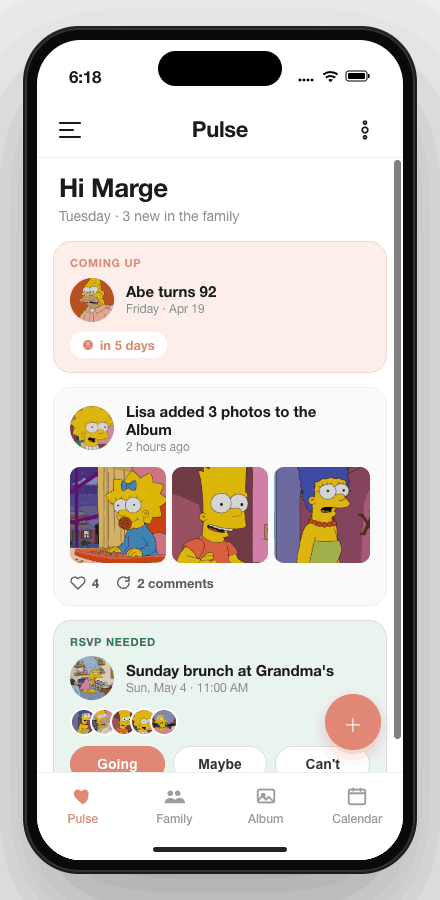
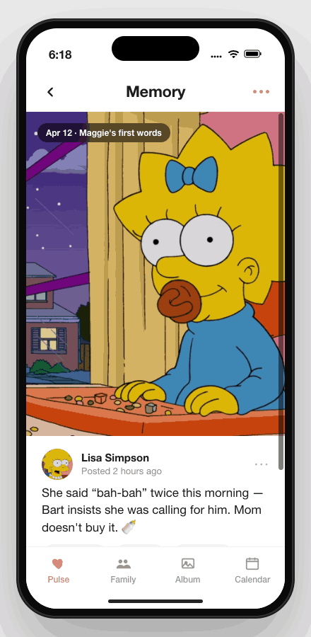
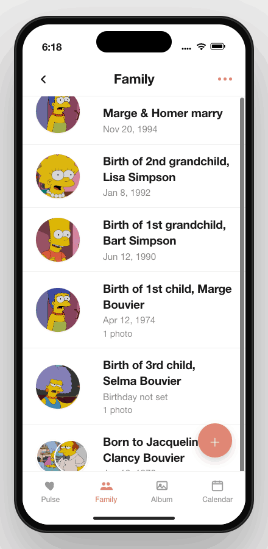
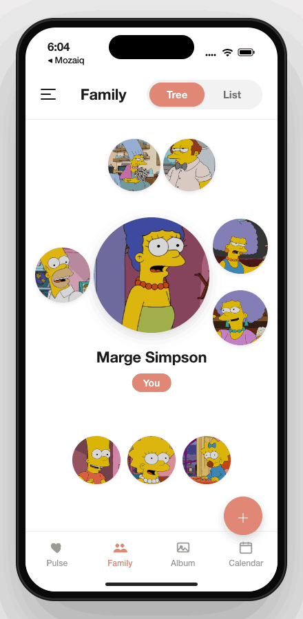
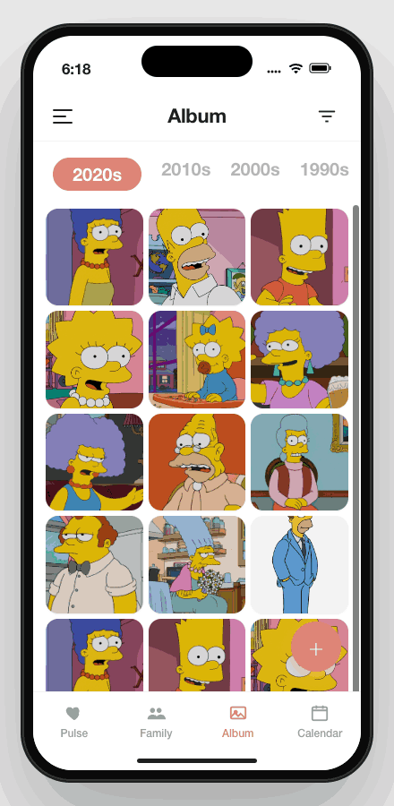
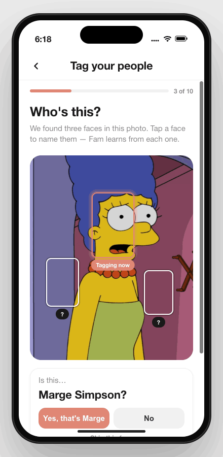
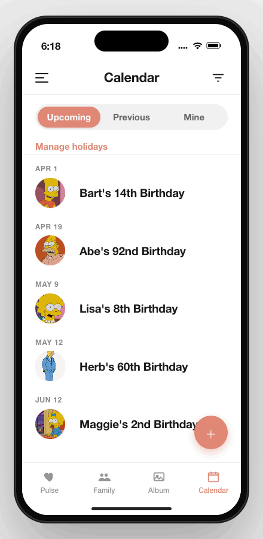
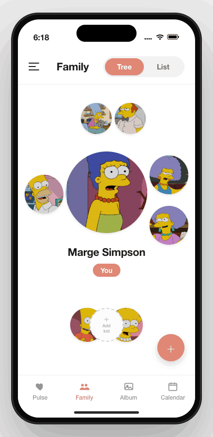
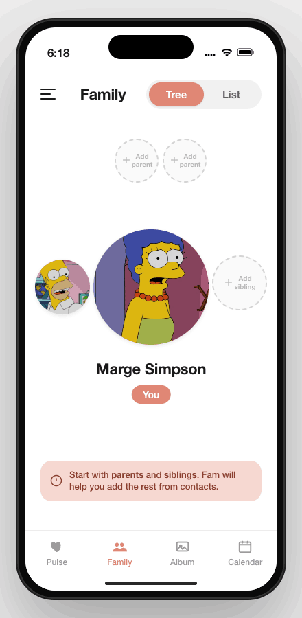

A quiet place
for family.
A complete front-end system — principles, tokens, components, motion, and a screen-by-screen map of the Fam iOS app.
What this packet covers, and how to read it.
Fam is a private family network — calendar, photos, family tree, and a daily Pulse feed knit into one app. This document is the single front-end reference. Designers, engineers, and PMs should be able to start any new screen here and finish it without reinventing tokens, components, or copy patterns.
Goals
One source of truth for tokens, components, and screen patterns. No raw hex in code. No magic numbers. No invented buttons.
Speed up review: every screen should be traceable to the same primitives and rules.
Non-goals
This is not a marketing site, not a brand-book, and not exhaustive engineering documentation. Component code lives in the repo; this packet links to it where useful.
Dark mode is out of scope for V1.
At a glance
- Platform
- iOS · React Native (Expo) · Light mode
- Surface
- 4 primary tabs + drawer · ~34 screens / sheets in V1
- Accent
- Coral clay
#E37A6D, used sparingly for action & emphasis - Type
- SF Pro (system) · 13 → 34pt scale · weights 400 / 600 / 700
- Spacing
- 4-based scale, 24pt screen padding, 44pt tap floor
- Iconography
- Material Symbols Rounded · outline default · 52 registered tokens
- Motion
- iOS-flavored ease-out, 100 → 320ms, restraint over flourish
Four ideas the rest of the system is in service of.
Clarity over density.
Big type, generous whitespace, one clear job per screen. Older eyes and faster thumbs both win.
Human, calm, familial.
Warm but not playful. We are setting a table, not throwing confetti. Coral is the warmest thing on screen.
Touch first.
Every tap target is at least 44pt. No hover-only affordances. Forms feel like talking, not filing.
Predictable patterns.
A button is a button is a button. The same component behaves the same in every corner of the app.
Content leads, chrome follows. Photos move; family moves; the UI quietly responds.
Implications for new work
- No raw hex, no magic numbers — everything routes through tokens.
- No emojis as system icons. No “Next” button (it’s always Continue).
- No date pickers built from text inputs. No two loaders on screen at once.
- Reach for an existing primitive before drawing a new one.
A warm, plain-spoken voice for the people closest to you.
Voice
Direct. Familiar. The way you’d talk to a sibling. Headlines are short. Empty states explain rather than apologize. Errors don’t panic.
Tone shifts
Birthdays & celebrations — warm, slightly playful.
Memorials & remembrance — quiet, respectful, no exclamation marks.
Settings & errors — neutral and procedural, never robotic.
Do say
“Add any photos you have of Michael Jr.” — soft invite, no pressure.
“Memorable days and major milestones.” — descriptive, not promotional.
Don’t say
“🎉 Don’t miss it!” — emojis, urgency, hype.
“Click here to proceed.” — web-speak, abstract verbs.
Wordmark
A small, deliberate palette. Coral does the work; neutrals carry the weight.
Every value in the app routes through a token in theme/tokens.ts. No raw hex anywhere else. Light mode only in V1; parallel tokens will be added when dark ships.
Brand & accent
Surface & text
Lines & status
Body text on white passes AA at 16pt. Coral on white passes AA only at 17pt+ semibold; never set color.accent on small body copy. Use color.accentPressed when in doubt.
System type, three weights, thirteen sizes.
SF Pro only. No custom fonts. All UI text flows through <Text variant="…"/> — never react-native’s raw Text. Dynamic Type scales up to 1.5× by default to keep buttons and rows from breaking.
Pairings in context
A 4-based scale, a 44pt floor, and just enough corners.
Spacing scale
Radius
Elevation
Layout constants
| Constant | Value | Use |
|---|---|---|
screenPadding | 24 | Horizontal padding on every screen. |
FAB_SIZE · FAB_INSET | 56 · 16 | Floating action button size + inset. |
PICKER_ROW_MIN_HEIGHT | 44 | Tap-target floor for every picker row. |
TREE_LANE_AVATAR_ROW_HEIGHT | 48 | Horizontal lane row height in the family tree. |
FORM_FOOTER_PINNED_HEIGHT_THRESHOLD | 812 | Above this viewport, footer pins; below, inline. |
FAMILY_TREE_VERTICAL_CENTER_NUDGE | −48 | Optical centering for the tree viewport. |
One family. One weight. One adapter.
Material Symbols Rounded · outline default · weight 400 · grade 0 · opsz 24. Every icon in the app renders through AppIcon from a typed registry — unknown tokens fail typecheck. The only places fill is allowed: the active tab, the FAB, and a handful of approved emphasis states.
Registered tokens
Registry-only — unknown tokens are a build error. No emoji icons. No per-screen overrides of weight, fill, or family. Adding a new token? Land it with the proposed flag and a screenshot.
A small library, used everywhere.
Roughly forty primitives and composites in the V1 library — buttons, inputs, modals, segments, avatars, lists, FAB, and the bespoke tree pieces. New work should compose from this set first; build something new only when nothing fits, and surface it for review.
Buttons
Labels are canon: Continue (never “Next”), Cancel, Back, Save / Create. All strings come from copy/common.buttons.
Inputs & form fields
Segmented controls & chips
Avatars & clusters
List rows & the FAB
ExpandableFAB when more than one action belongs.Toggles, tab bar & modal shell
Component inventory
| Group | Components | Notes |
|---|---|---|
| UI primitives | Text, Button, IconButton, Input, Card, Divider, Row, Screen, SectionHeader, SegmentedToggle, SegmentedControl, OptionChips, AppIcon, FullScreenLoader, HelperText |
All token-driven. 44pt touch floor. |
| Shared composites | ModalShell, ListOptionModal, ReminderSheet, TextLink, InlineSectionHeader, HeaderOverflowMenu, ExpandableFAB, FamilyPersonAvatarCluster, AudienceGroupShortcutPills, OfflineBanner |
Universal patterns — use these before building new. |
| Forms | FormScreen, FormBody, FormSection, FormFieldGroup, FormFieldRow, FormOptionRow, FormFooterCTA, FormWizardFooter, SmartLocationInput, MonthDayPicker, FullBirthdayPicker |
One pinned / inline footer mode chosen by viewport. |
| Domain | person/*, pulse/*, tree/*, events/*, occurrences/*, photos/* |
Feature-specific compositions; tree is the flagship. |
Four tabs, one drawer, and a tight set of flows.
Navigation follows the cross-tab back contract — when a screen is opened in one tab from another, back returns to the source. returnToTab is forwarded all the way down, and Calendar back never pushes a nested profile.
Navigation rules at a glance
| Rule | Detail |
|---|---|
| Cross-tab back | Always pass returnToTab. Valid: Pulse · FamilyTree · Calendar · Photos · Alerts. Never use legacy Feed or Profile. |
| Tab root header | Hamburger (nav.menu) on root; back arrow (action.back) on stack children. |
| Calendar back | Returns to the source tab — never pushes a nested PersonProfile. |
| Tab tap behavior | Tapping a tab from a deep stack pops to that tab’s root. |
Every screen in V1, grouped by tab and flow.
Thirty-four screens cover the V1 surface. Each one composes from the same primitives in Section 07; if you spot a custom button or a unique modal, that is a bug.
Daily activity, fed by the rest of the app.
Cards represent memories, events, RSVPs, tree expansions, and conversations. Bell badge links to Alerts.



Tree, list, and person profile.
The flagship surface. Five-region tree viewport recenters on tap; the profile is the morph target of the tree → profile transition.

Shared family photos, by decade.
Hub → viewer → frosted details drawer. The Add Photos wizard splits the upload into three calm steps.



Birthdays, anniversaries, holidays, events.
Lists are the default view; Manage Holidays is settings-shaped; events and celebrations share a two-step wizard.
Switching families, inviting people, getting started.
The drawer is the only multi-family surface in the app. Onboarding deliberately offers both join + create in one screen so claim-invite users don’t fall off.


iOS-flavored ease-out. Restraint over flourish.
Motion supports continuity, not novelty. Content (photos, faces) animates; chrome quietly responds. Never use motion as the sole indicator of state.
Timing tokens
| Token | ms | Use |
|---|---|---|
timing.instant | 100 | Press / micro feedback. |
timing.standard | 200 | Most UI transitions. |
timing.emphasized | 280 | Screen transitions, recenter. |
timing.long | 400 | Large reorganizations only. |
timing.treeReflow | 1200 | Full tree lane reflow (exit + stay + enter). |
timing.treeProfileTransition | 650 | Tree → profile, four-phase. |
Easing & press
Choreography
| Surface | Behavior |
|---|---|
| Buttons | Press scale 0.98 → release 1.0 over 90–120ms. |
| Tree avatars | Press scale 1.03 (gentler than buttons). |
| Screen push | Subtle slide + fade, 220–280ms. |
| Modal | Backdrop fade 180ms · sheet slide 260–320ms. |
| Tab switch | Quick fade 120–180ms or none — never big slides. |
| Tap-to-center | Press 100ms → lock 80ms → expand 700ms → reflow 1200ms ≈ 2s. |
| Reduce Motion | Replace transitions with fades; never use motion as sole state. |
Loading, empty, and error — three rules each.
Cold start uses FullScreenLoader — spinner only, no message. Inline loads use a small ActivityIndicator tinted accent.
Never stack two loaders. Pull-to-refresh keeps a single themed spinner; subsequent tab returns show cached content with optional silent refresh — never a blank screen.
Centered body + secondary color + optional primary action. Distinguish a true empty state from a filtered-to-nothing state.
True empty → headline + CTA. Filtered → “No results.” copy. Never apologetic.
Section-level: inline error + ghost Retry. Screen-level (no content yet): centered + retry. Partial: render what loaded + inline error for the failing section.
AA contrast. 44pt floor. Type that scales.
color.accentPressed when contrast is borderline.Button, IconButton, PICKER_ROW_MIN_HEIGHT.<Text> respects system font scaling; capped at 1.5× (default) to keep rows stable. Form inputs are also capped.accessibilityLabel. Decorative icons must not announce.accessibilityHints yet — a known gap.Where things live, how to ship a new screen.
Source of truth
| What | Where |
|---|---|
| Tokens (color, type, space, radius, shadow, layout) | mobile/src/theme/tokens.ts |
| Motion (timing, easing, spring, press) | mobile/src/theme/motion.ts |
| Icon registry | mobile/src/theme/iconRegistry.ts |
| UI primitives | mobile/src/components/ui/ |
| Shared composites | mobile/src/components/shared/ |
| Forms | mobile/src/components/forms/ |
| Domain components | mobile/src/components/{person,pulse,tree,events,occurrences,photos}/ |
| Copy strings | mobile/src/copy/ (by domain — nav, common, events, …) |
| Navigation contract | mobile/src/navigation/CalendarStackTypes.ts |
Shipping a new screen — the short checklist
- Wrap in
<Screen>. SettestID. Default safe-area on. - All text through
<Text variant="…"/>· all colors throughcolor.*· all spacing throughspace.*. - Copy lives in
copy/— no string literals in JSX. - If it’s a form, wrap in
FormScreen+FormBody gap="md". OneFormFieldGroupper input. - Required fields use
required. Optional fields say “(optional)” in the label only. - Dates use one touchable + native picker. Never a text input.
- Primary CTA disabled until
canSubmit. Enforced by Jest. - If opened from another tab, forward
returnToTab. - Loading / empty / error all rendered. Single loader. No
Alert.alertfor design errors. - Icons via
AppIcon token="…". Unknown tokens fail typecheck.
Twelve hard rules — never do
- Don’t use raw hex outside
tokens.ts. - Don’t import
Textfromreact-nativeinside a screen. - Don’t label a button “Next.” Always
Continue. - Don’t put “(optional)” in a placeholder.
- Don’t build a date picker from a text input.
- Don’t mix icon libraries or use emoji as system icons.
- Don’t stack two loaders.
- Don’t apply card elevation to a form body.
- Don’t push a nested PersonProfile in Calendar back actions.
- Don’t use accent as a small-body text color.
- Don’t add a primary-only footer to a Step 1 of N wizard.
- Don’t add motion as the sole indicator of state.